Lab Overview
In this lab, I implemented CPU scheduling algorithms in C#. I started with long-term scheduling by filtering jobs from a process table based on priority. Then I implemented FCFS scheduling to calculate finish time, turnaround time, and normalized turnaround time, and plotted Gantt charts. I also implemented Round-Robin scheduling with different time slices (TQ = 1, 3, 4, 6) and analyzed how time slice size affects performance. Finally, I extended Round-Robin to include priority-based scheduling and researched Priority Scheduling and SJN independently.
Section 1: Long-Term Scheduling Simulation
In this initial stage, we explored the role of the long-term scheduler by simulating a job queue based on a provided process table. I implemented a C# function designed to filter and admit specific jobs into the system based on predefined criteria, such as priority levels. This exercise helped us understand how an operating system manages the pool of available processes and decides which ones are ready to be transitioned into memory for execution.
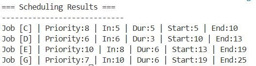
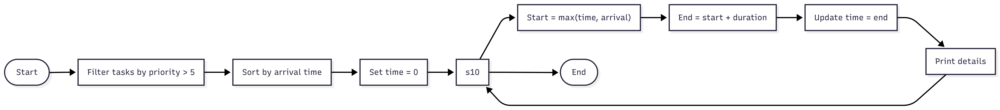
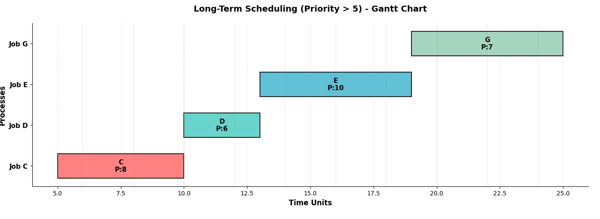
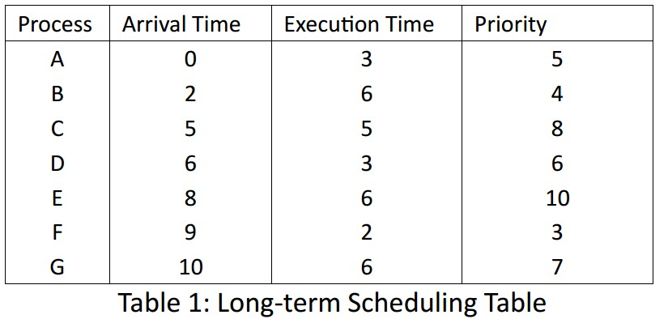
corresponding code
using System;
using System.Collections.Generic;
using System.Linq;
public record TaskItem(string Name, int Arrival, int Length, int Priority)
{
public int StartTime { get; set; }
public int EndTime { get; set; }
}
class Program
{
static void Main()
{
var tasks = new List
{
new("A", 0, 3, 5),
new("B", 2, 6, 4),
new("C", 5, 5, 8),
new("D", 6, 3, 6),
new("E", 8, 6, 10),
new("F", 9, 2, 3),
new("G", 10, 6, 7)
};
var highPriorityTasks = tasks
.Where(t => t.Priority > 5)
.OrderBy(t => t.Arrival)
.ToList();
int currentTime = 0;
Console.WriteLine("=== Scheduling Results ===");
Console.WriteLine("----------------------------");
foreach (var job in highPriorityTasks)
{
if (currentTime < job.Arrival)
currentTime = job.Arrival;
job.StartTime = currentTime;
job.EndTime = currentTime + job.Length;
currentTime = job.EndTime;
Console.WriteLine($"Job [{job.Name}] | Priority:{job.Priority} | In:{job.Arrival} | Dur:{job.Length} | Start:{job.StartTime} | End:{job.EndTime}");
}
}
}
Section 2: First-Come-First-Serve (FCFS) Implementation
We then moved into short-term CPU scheduling by implementing the First-Come-First-Serve (FCFS) algorithm. Using a dedicated process table, I developed a program to calculate essential performance metrics, including finish time, turnaround time, and normalized turnaround time for each process. To wrap up this task, we visualized the linear execution order of these processes by plotting a Gantt chart.
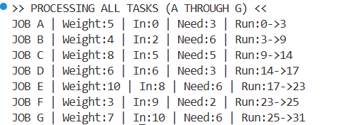
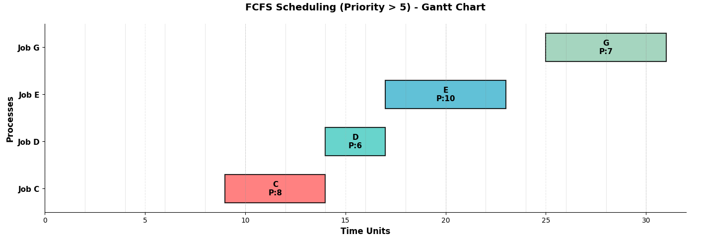
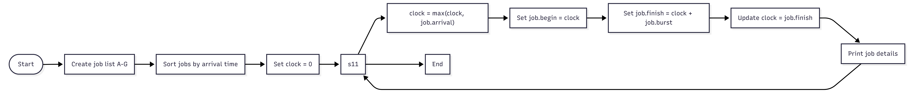
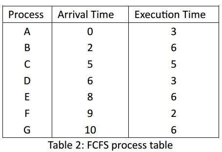
corresponding code
using System;
using System.Collections.Generic;
using System.Linq;
public record JobItem(string Code, int Release, int Burst, int Rank)
{
public int Begin { get; set; }
public int Finish { get; set; }
}
class Dispatcher
{
static void Main()
{
List jobs =
[
new("A", 0, 3, 5),
new("B", 2, 6, 4),
new("C", 5, 5, 8),
new("D", 6, 3, 6),
new("E", 8, 6, 10),
new("F", 9, 2, 3),
new("G", 10, 6, 7)
];
var orderedJobs = jobs
.OrderBy(j => j.Release)
.ToList();
int clock = 0;
Console.WriteLine(">> PROCESSING ALL TASKS (A THROUGH G) <<");
foreach (var j in orderedJobs)
{
clock = Math.Max(clock, j.Release);
j.Begin = clock;
j.Finish = clock + j.Burst;
clock = j.Finish;
Console.WriteLine($"JOB {j.Code} | Weight:{j.Rank} | In:{j.Release} | Need:{j.Burst} | Run:{j.Begin}->{j.Finish}");
}
}
}
Section 3: Round-Robin Scheduling and Time Quantum Analysis
For more complex scheduling, we implemented the Round-Robin algorithm, which introduces time-slicing to provide a more equitable distribution of CPU time. I simulated the process execution using multiple time slices ($TQ=1, 3, 4, 6$) and calculated the same efficiency metrics used in the FCFS task. We carefully analyzed how the size of the time slice directly impacts the turnaround time and overall system responsiveness.
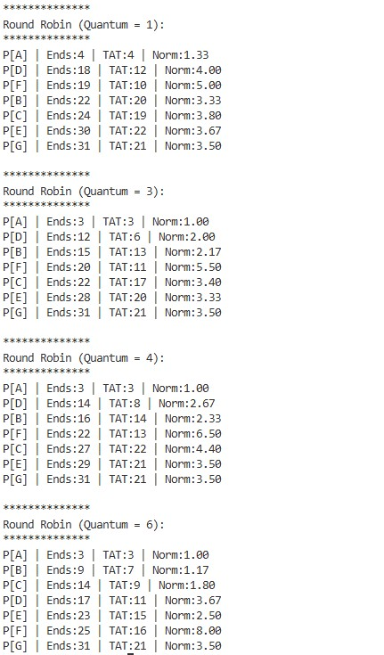
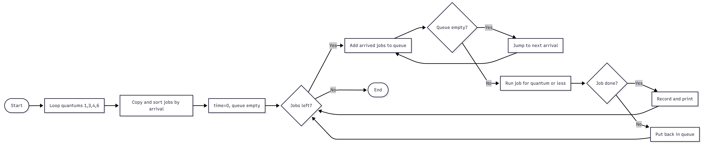
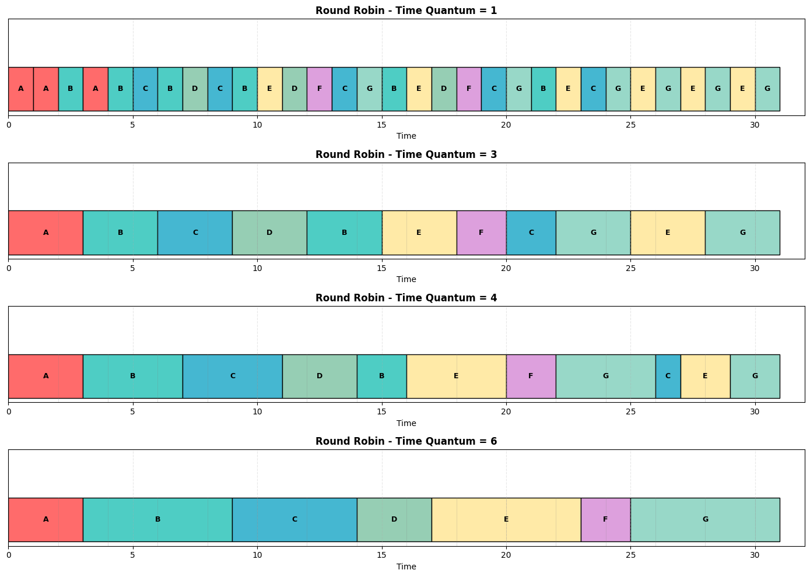
corresponding code
using System;
using System.Collections.Generic;
using System.Linq;
class Process
{
public string Id { get; set; }
public int Arrive { get; set; }
public int Burst { get; set; }
public int Remaining { get; set; }
public int FirstRun { get; set; }
public int Complete { get; set; }
public int Turnaround { get; set; }
public double NormTurnaround { get; set; }
public Process(string id, int arrive, int burst)
{
Id = id;
Arrive = arrive;
Burst = burst;
Reset();
}
public void Reset()
{
Remaining = Burst;
FirstRun = -1;
Complete = 0;
Turnaround = 0;
NormTurnaround = 0;
}
}
class Scheduler
{
static void Main()
{
var processes = new List
{
new Process("A", 0, 3),
new Process("B", 2, 6),
new Process("C", 5, 5),
new Process("D", 6, 3),
new Process("E", 8, 6),
new Process("F", 9, 2),
new Process("G", 10, 6)
};
int[] quantums = { 1, 3, 4, 6 };
foreach (var q in quantums)
{
var copy = processes.Select(p => new Process(p.Id, p.Arrive, p.Burst)).ToList();
Console.WriteLine($"\n**************");
Console.WriteLine($"Round Robin (Quantum = {q}):");
Console.WriteLine($"**************");
RunRoundRobin(copy, q);
}
}
static void RunRoundRobin(List processes, int quantum)
{
var sorted = processes.OrderBy(p => p.Arrive).ToList();
int time = 0;
Queue queue = new Queue();
int nextIdx = 0;
int done = 0;
while (done < sorted.Count)
{
while (nextIdx < sorted.Count && sorted[nextIdx].Arrive <= time)
{
queue.Enqueue(sorted[nextIdx]);
nextIdx++;
}
if (queue.Count == 0)
{
if (nextIdx < sorted.Count)
{
time = sorted[nextIdx].Arrive;
}
continue;
}
Process current = queue.Dequeue();
if (current.FirstRun == -1)
{
current.FirstRun = time;
}
int run = Math.Min(quantum, current.Remaining);
current.Remaining -= run;
time += run;
while (nextIdx < sorted.Count && sorted[nextIdx].Arrive <= time)
{
queue.Enqueue(sorted[nextIdx]);
nextIdx++;
}
if (current.Remaining == 0)
{
current.Complete = time;
current.Turnaround = current.Complete - current.Arrive;
current.NormTurnaround = (double)current.Turnaround / current.Burst;
done++;
Console.WriteLine($"P[{current.Id}] | Ends:{current.Complete} | TAT:{current.Turnaround} | Norm:{current.NormTurnaround:F2}");
}
else
{
queue.Enqueue(current);
}
}
}
}
Section 4: Priority-Based Scheduling and Context Switching
In the final technical task, we extended our Round-Robin simulation to incorporate priority-based scheduling. We utilized a detailed process table containing varying arrival times and priorities to observe how the CPU switches between tasks of different importance. By plotting Gantt charts for different time slices, we discussed our observations regarding how context switching and priority levels influence the order of execution in a modern operating system.
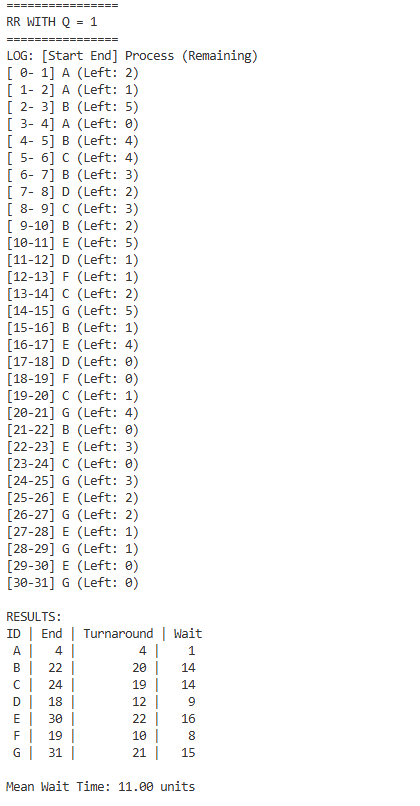
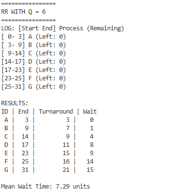
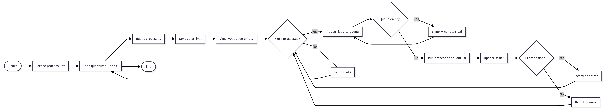
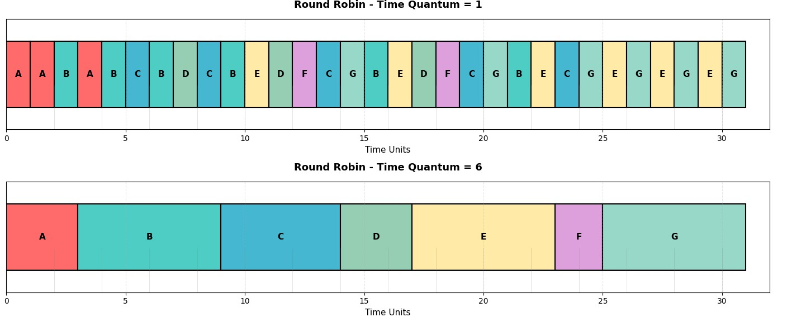
corresponding code
using System;
using System.Collections.Generic;
using System.Linq;
class Process
{
public string Label { get; set; }
public int Arrive { get; set; }
public int Burst { get; set; }
public int Left { get; set; }
public int End { get; set; }
public int Turn => End - Arrive;
public int Wait => Turn - Burst;
public Process(string label, int arrive, int burst)
{
Label = label;
Arrive = arrive;
Burst = burst;
Left = burst;
}
public void Renew() => Left = Burst;
}
class RRSimulator
{
static void Main()
{
var items = new List
{
new Process("A", 0, 3),
new Process("B", 2, 6),
new Process("C", 5, 5),
new Process("D", 6, 3),
new Process("E", 8, 6),
new Process("F", 9, 2),
new Process("G", 10, 6)
};
int[] slices = { 1, 6 };
foreach (var q in slices)
{
Console.WriteLine($"\n================");
Console.WriteLine($"RR WITH Q = {q}");
Console.WriteLine($"================");
items.ForEach(p => p.Renew());
ExecuteRR(items, q);
}
}
static void ExecuteRR(List items, int q)
{
int timer = 0;
int done = 0;
var line = new Queue();
var pending = new List(items.OrderBy(p => p.Arrive));
Console.WriteLine("LOG: [Start End] Process (Remaining)");
while (done < items.Count)
{
while (pending.Count > 0 && pending[0].Arrive <= timer)
{
line.Enqueue(pending[0]);
pending.RemoveAt(0);
}
if (line.Count == 0)
{
if (pending.Count > 0)
timer = pending[0].Arrive;
continue;
}
Process curr = line.Dequeue();
int run = Math.Min(curr.Left, q);
Console.WriteLine($"[{timer,2}-{timer + run,2}] {curr.Label} (Left: {curr.Left - run})");
timer += run;
curr.Left -= run;
while (pending.Count > 0 && pending[0].Arrive <= timer)
{
line.Enqueue(pending[0]);
pending.RemoveAt(0);
}
if (curr.Left > 0)
{
line.Enqueue(curr);
}
else
{
curr.End = timer;
done++;
}
}
ShowStats(items);
}
static void ShowStats(List items)
{
Console.WriteLine("\nRESULTS:");
Console.WriteLine("ID | End | Turnaround | Wait");
foreach (var p in items)
Console.WriteLine($"{p.Label,2} | {p.End,3} | {p.Turn,9} | {p.Wait,4}");
Console.WriteLine($"\nMean Wait Time: {items.Average(p => p.Wait):F2} units");
}
}